ChatGPT#
ChatGPTをアクセスするためのアカウントを作成する#
手順は概ね次の通り:
OpenAIのWebサイト (https://openai.com) をアクセスする
OUMailアドレスでアカウントを作成すると、本人確認のためのメールがOUMailアカウントに届くので承認する
多要素認証のために携帯電話の番号を登録すると、ショートメッセージで確認コードが届くので認証する
生年月日を登録する
APIキーを作成する (クリップボードにコピーされるのでペーストして保存しておく)
OpenAIのWebサイトをアクセスする#
OpenAI (https://openai.com/) をアクセスする
“Product” から “~~ChatGPT~~” “Overview” を選択する。
次のような画面に遷移するので “Get started” をクリックするとアカウントの作成画面へ遷移する
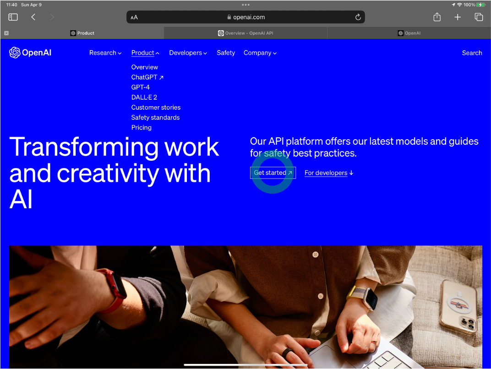
OUMailアドレスでアカウントを作成すると、本人確認のためのメールがOUMailアカウントに届くので承認する#
“Sign up” を選択する
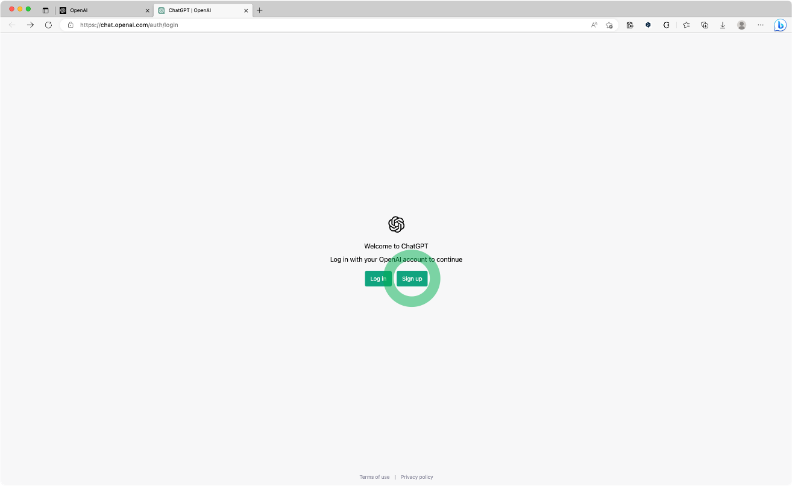
“Crate your account” と表示されるので、OUMailのアドレスと適切なパスワードを入力する。
Note
アカウント名で指定するメールアドレス宛に確認のメールが配信されるので、ここではOUMailのアドレスをアカウント名として登録します。
Warning
ここで入力するパスワードは、OUMailのアカウントとは連携していません。セキュリティリスクを避けるため、OUMailアカウントとは別のパスワードを登録して下さい。
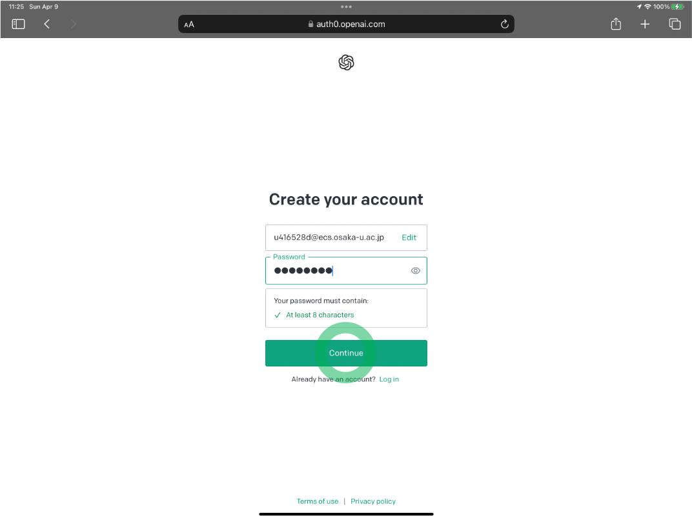
人間の手による操作であることを確認する画面が表示されるので、チェックボックスをクリックして下さい
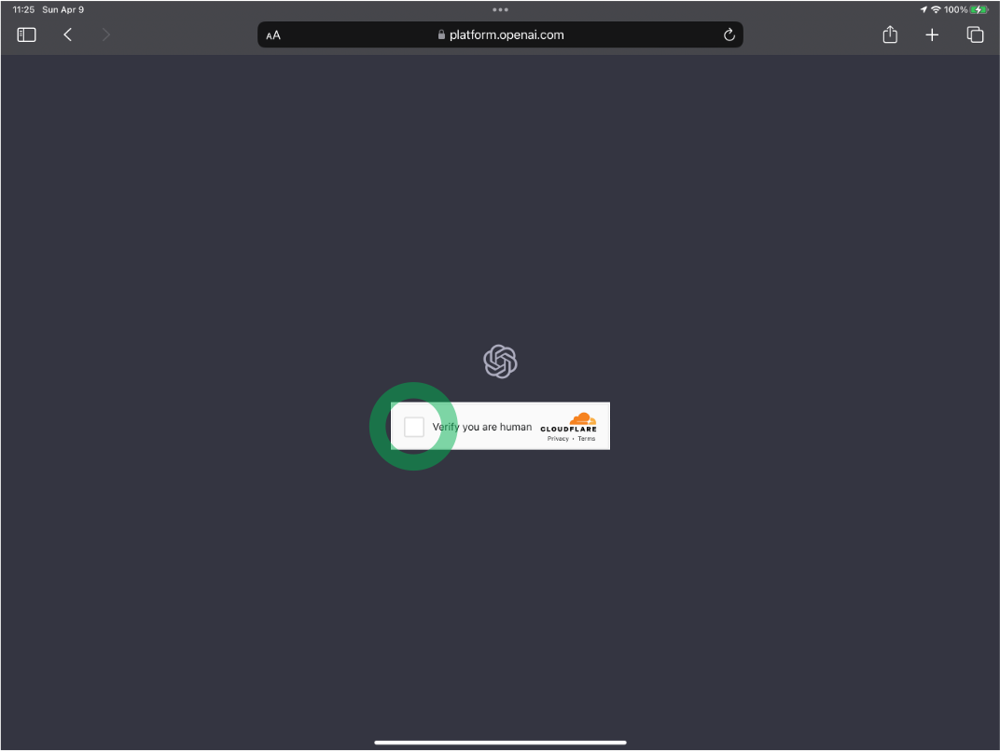
OUMail宛にアカウント名でメールが着信できることを確認するメールが届くので “Verify email address” をクリックする
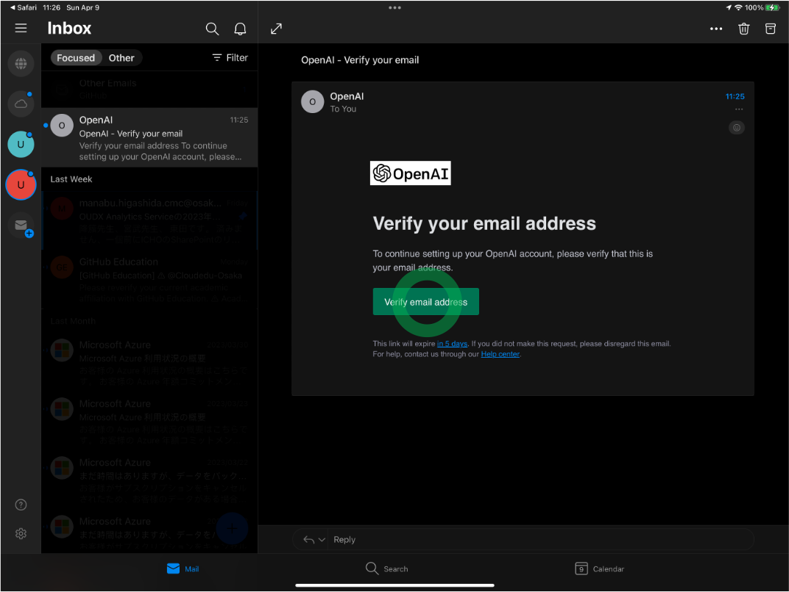
再度、OpenAIのログイン画面が表示されるので、OUMailアドレスと、先ほど登録したパスワードで認証を行う。
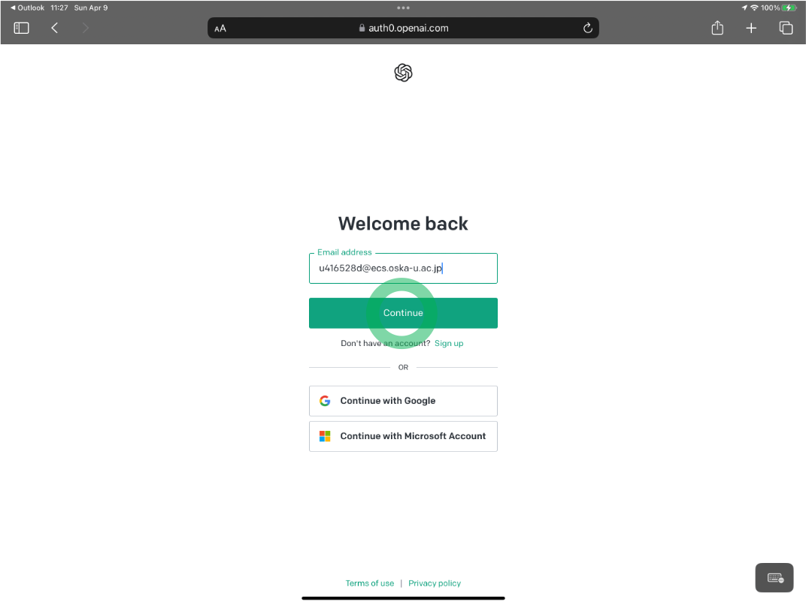
多要素認証のために携帯電話の番号を登録すると、ショートメッセージで確認コードが届くので認証する#
多要素認証のため、スマートフォンのショートメッージで認証コードの照合を行う必要がある。携帯電話の番号を “0x0xxxxyyyy” のような11桁の数字で入力する。
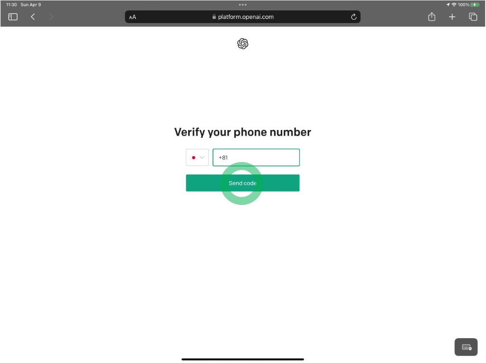
スマートフォンが着信したショートメッセージに記載されている6桁の数字を入力する。
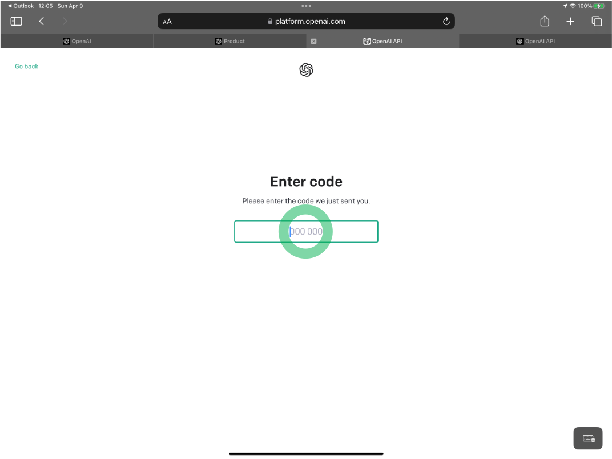
生年月日を登録する#
生年月日を入力する (鉛筆のアイコンをクリックして直接入力した方がよい)
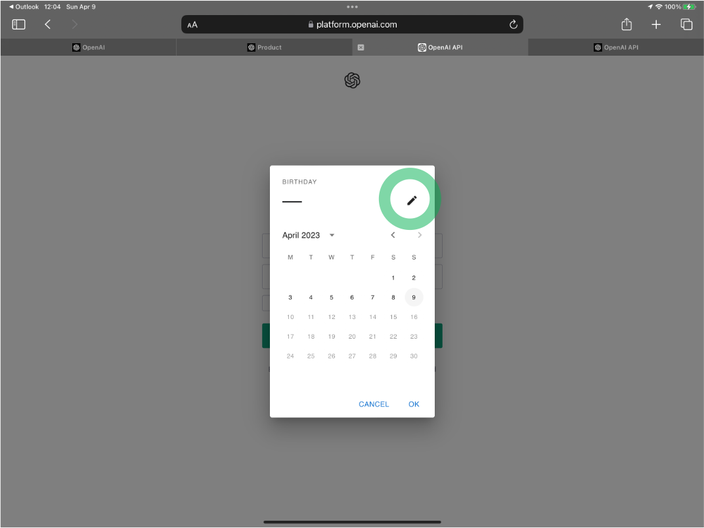
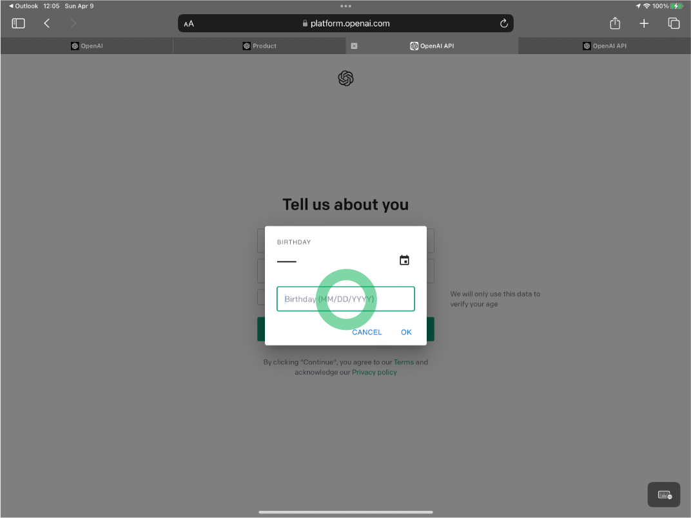
APIキーを作成する (クリップボードにコピーされるのでペーストして保存しておく)#
右上の ”● Personal” というアイコンをクリックすると、ドロップダウンメニューが表示されるので “View API keys” を選択する
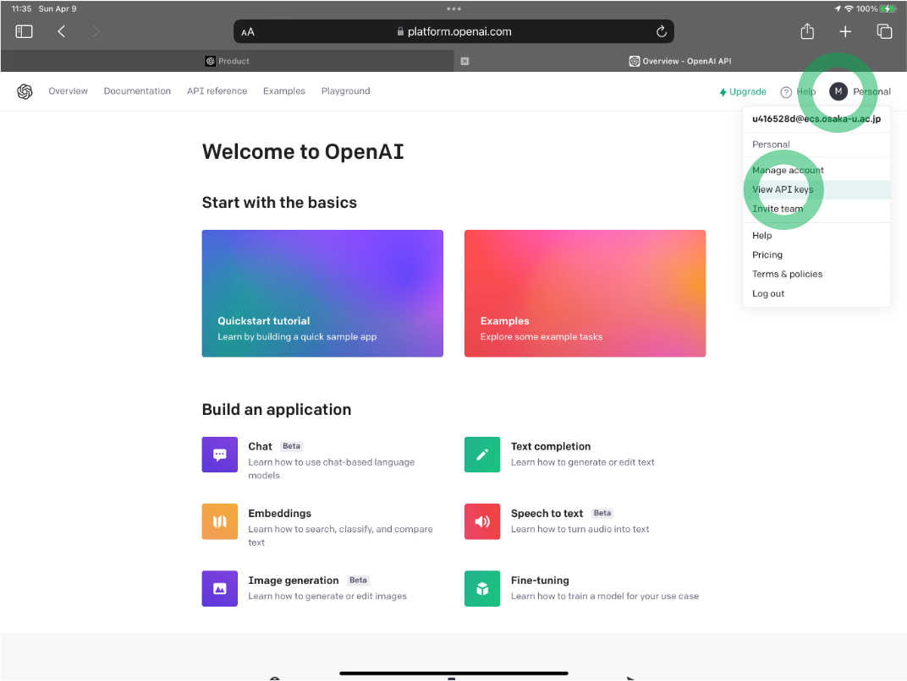)
次の画面に遷移するので、”+ Create new secret key” をクリックする
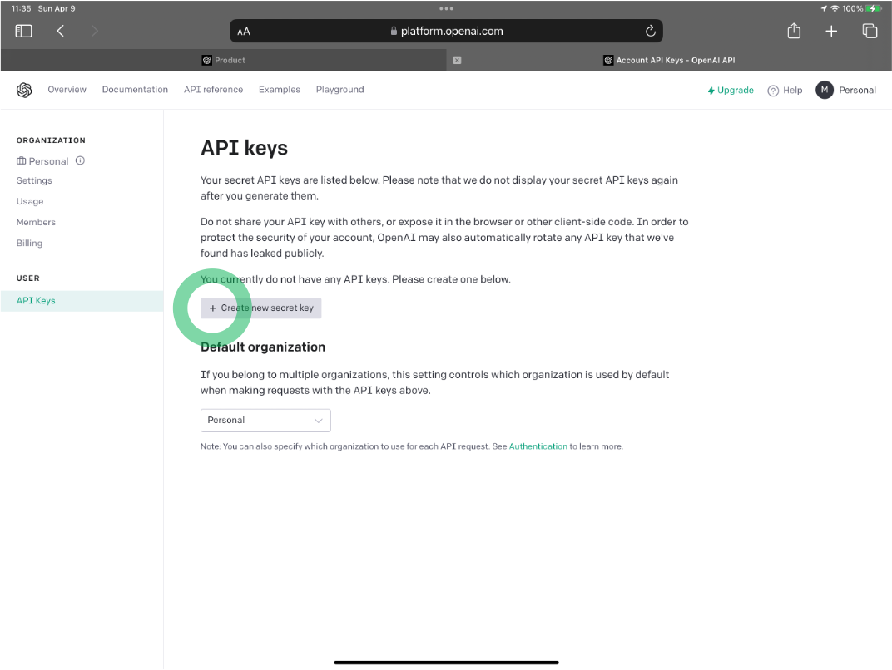
“API key generated” と表示されるので、緑のコピーボタンをクリックする。クリップボードに “API key” が格納される。
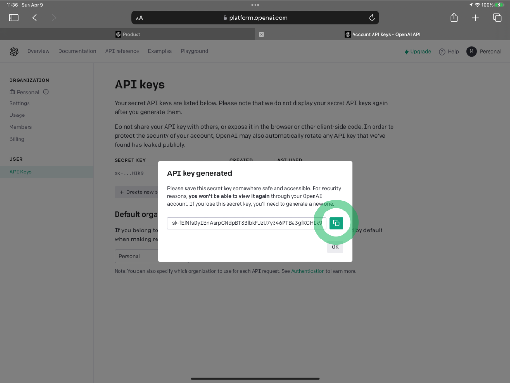
API key は一度しか表示されないので、忘れてしまった場合は、再度作成する。忘れてしまったキーは削除しておく
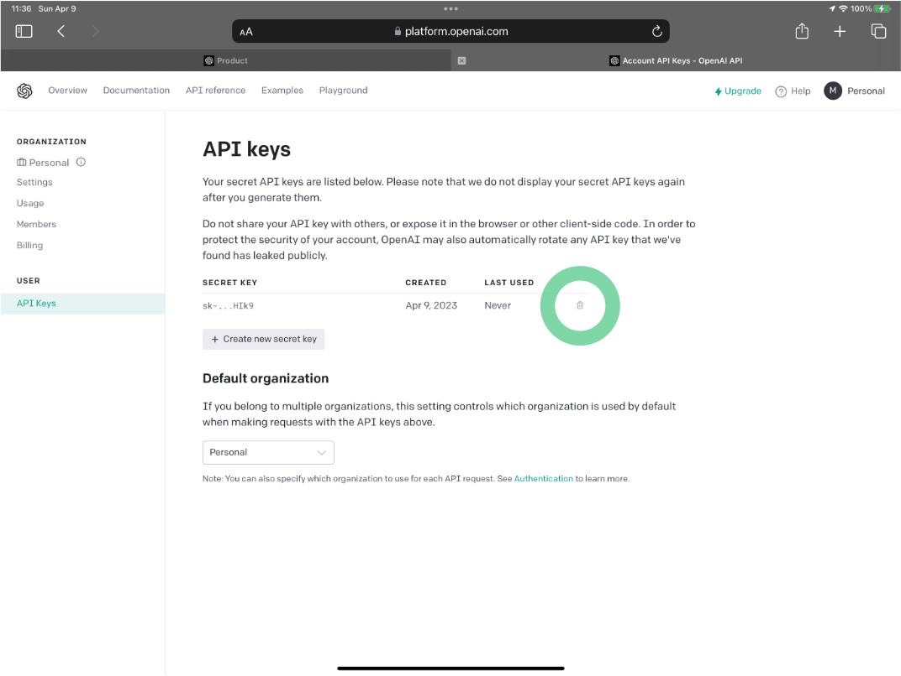